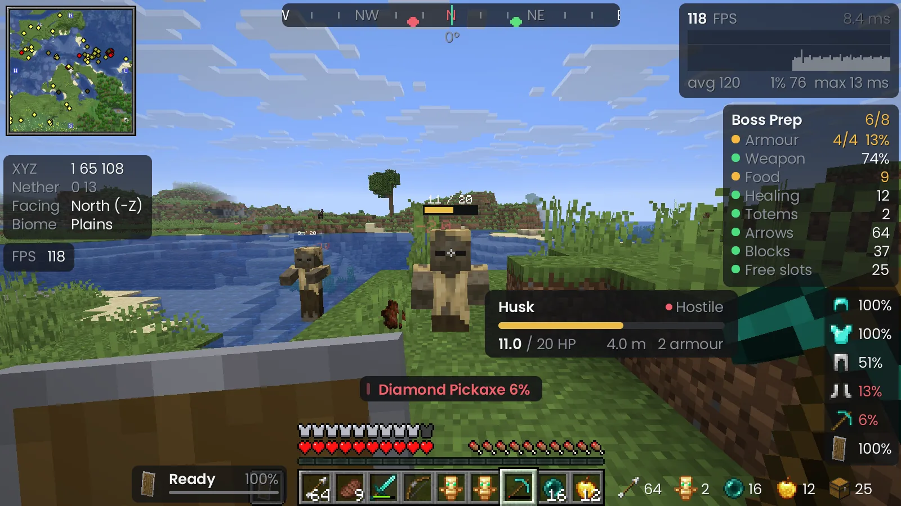
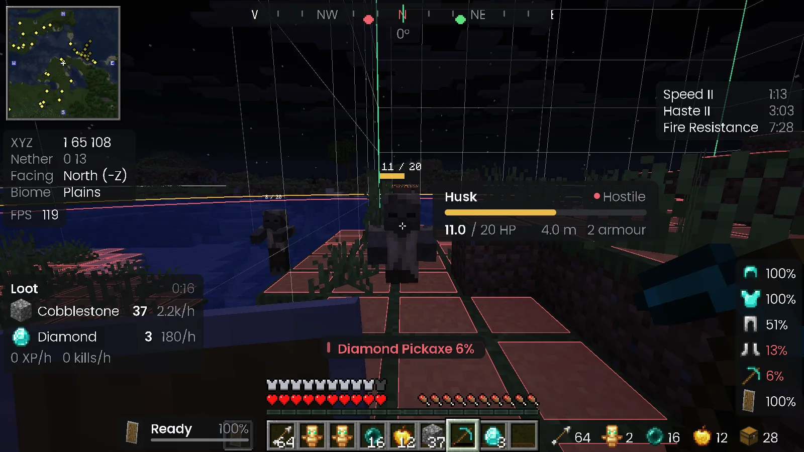
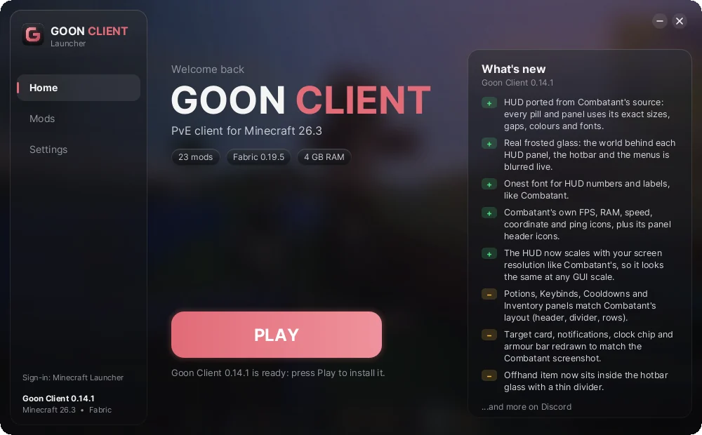

ClickGUI
Press Right Shift for every module in one place, with search, full descriptions, smooth animations and per-module settings.
The PvE client for survival. Clean HUDs, waypoints, trackers and a tuned performance pack, all set up in one click.
Free. Needs Minecraft: Java Edition. The .mrpack works in the Modrinth App and Prism on any OS.

Built for playing with friends on servers: the info you actually look at, laid out cleanly, and nothing that gets in the way.
Press Right Shift for every module in one place, with search, full descriptions, smooth animations and per-module settings.
Drag, snap, resize and hide any panel. Panels you haven't moved make room for each other, so nothing overlaps.
Save spots with /wp, see them on the compass strip, and get a death waypoint automatically so you can find your stuff.
Red where mobs can spawn now, amber where they can at night. Chunk borders and 24, 32 and 128 block rings help you plan farms.
Press J for a diary of each world: deaths and what killed you, boss kills, rare finds, advancements and trips, with auto screenshots.
Everything you pick up, with drops, XP and kills per hour. Reset it when you start a farm run.
Health, type, armour and distance of what you're looking at, plus health bars over hurt mobs.
Floating damage numbers, an attack cooldown bar, a marker when your jump hit will crit, and shield status.
Warnings for low health, hunger, drowning, fire, poison and breaking gear, plus a pre-fight checklist for armour, food, healing, totems and arrows.
Armour durability, potion timers, an item counter, pickup popups and shulker previews, plus sorting and locked slots.
Hold C to zoom and Left Alt to look around. Make your own crosshair: five styles, any size and colour.
Coordinates with Nether conversion, an FPS graph, light level, world time, mining and session stats, Toggle Sprint and Sneak, Fullbright.
Seven accent colours, adjustable blur and panel opacity, and an animated menu background or your own picture. Pick one here and the page and every screenshot switch to it, just like in the client.
Straight from the client, no edits.







In game. Mob Info beside the crosshair, a health bar and damage number over the husk, potion timers, armour, the Loot Tracker and shield status.

The Goon Client Launcher gets Minecraft 26.3, Fabric and the whole mod pack ready for you, then starts the game.
.goonclient, so your normal Minecraft worlds and settings are never touched.Goon Client ships with a hand-picked Fabric pack. Every mod is downloaded straight from Modrinth, so the authors get the credit and the downloads.
Shaders are included but off by default. Turn them on in Video Settings when you want them.
The same notes we post in Discord. Green is new, yellow is changed.
PvE client for Minecraft 26.3 (Fabric). Update through the launcher, or grab the new .mrpack.
Goon Client is made by friends, for friends. It doesn't collect anything about you.
You sign in on Microsoft's own website with a short code. Goon Client never sees or stores your password.
Sign-in tokens are saved only on your computer and only ever sent to Microsoft, Xbox Live and Minecraft.
No analytics, no ads, no telemetry, in the client, the launcher or this site. Read the details.
Download the launcher, unzip it anywhere and run Goon Client Launcher. Press Play: it installs everything and starts the game. If you'd rather use the Modrinth App or Prism Launcher, download the .mrpack and import it there instead.
Yes. Goon Client runs on Minecraft: Java Edition and you sign in with your own Microsoft account, the same one you use for the normal Minecraft Launcher.
Goon Client is made for survival quality of life, not for getting an edge in PvP. Still, every server has its own rules, and some don't allow things like minimaps or fullbright. Check your server's rules and turn off anything they don't allow.
No. Goon Client keeps its own game folder, so your vanilla worlds, settings and resource packs stay exactly as they are.
The launcher is Windows only for now. On Mac and Linux, import the .mrpack into the Modrinth App or Prism Launcher and you get the same client and mods.
The launcher isn't code-signed yet, so Windows SmartScreen may warn you the first time. Click More info, then Run anyway. Only download it from this site.
Press Right Shift. From there you can turn modules on and off, change their settings and open the HUD editor to move panels around.
Grab the launcher and you'll be in game in a couple of minutes.